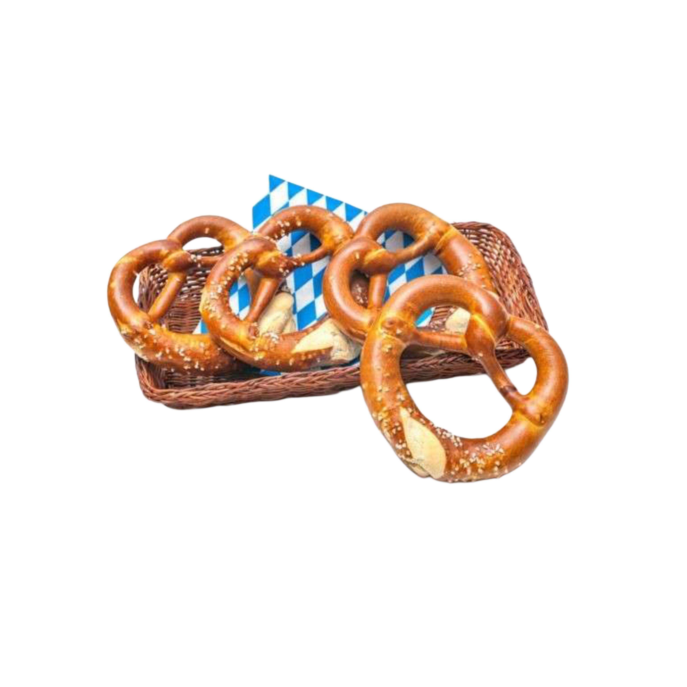

Pretzels
INGREDIENTS
- 1 1/2 cups warm water
- 1 packet active dry yeast
- 1 tsp salt
- 1 tbsp sugar
- 4 cups all-purpose flour
- 2/3 cup baking soda
- 1 egg, beaten
- Coarse salt for topping
WHAT TO DO
- Mix warm water, yeast, salt, and sugar. Let sit 5 mins.
- Gradually add flour to form a dough. Knead and let rise 1 hour.
- Divide, shape into pretzels. Dip each into baking soda solution.
- Brush with egg, sprinkle salt. Bake at 450°F (230°C) for 12–15 mins.
Nutritional Facts
| Calories |
Protein |
Total Fat |
| 150 kcal (per pretzel) |
4g |
1.5g |
